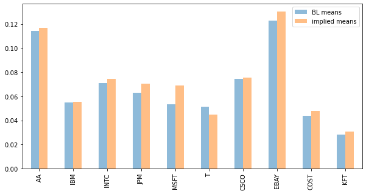
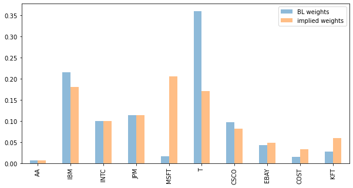
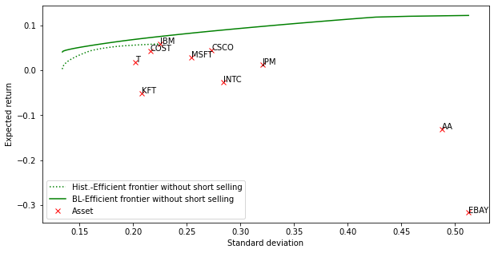

6 Das Black-Litterman Modell
6.1 Defizite der Portfoliooptimierung nach Markowitz
Die im Kapitel 2 “Absolute Portfoliooptimierung” dargestellte Portfolio-Selection-Theorie von Markowitz stellt eine quantitativ generell anerkannte Methode dar, um den Trade-off zwischen den zwei Grundzielen der Renditemaximierung und der Risikominimierung bei Investitionen zu erklären. Dieser Ansatz bildet nach wie vor das akademische Grundgerüst der Portfoliotheorie. In der Praxis konnte sich der Markowitz’sche Ansatz aufgrund diverser schwerwiegender Probleme allerdings nur eingeschränkt durchsetzen. Die vier Hauptprobleme bei der Anwendung des klassischen Ansatzes sind (vgl. Drobetz, 2002, S. 4 ff.):
- Extreme Portfolioallokationen
Häufig beinhalten optimierte Portfolios sowohl auf der Long-Seite als auch auf der Short-Seite extreme Portfoliogewichte. Diese Gewichte könnten in der Praxis bereits aus institutionellen und rechtlichen Gründen nicht umgesetzt werden. Die Mittelwert-Varianz-Optimierung tendiert auch bei Portfolios mit Restriktionen, wie zum Beispiel der Ausschluss von Leerverkäufen, zu extremen Portfoliogewichten.
- Sensitivität der Portfoliogewichte
Ein weiteres Problem stellt die starke Sensitivität der Portfoliogewichte gegenüber Veränderungen der Inputfaktoren dar. Besonders Veränderungen der erwarteten Renditen führen zu unrealistisch großen Umschichtungen im Portfolio. Dies verursacht zum einen hohe Transaktionskosten, zum anderen steht eine zu hohe Umschichtungsfrequenz für inkonsistentes Portfolio-Management und ist nach außen nur schwer kommunizierbar.
- Informationsaggregation
Der Markowitz’sche Ansatz erfordert die Spezifikation der Renditeerwartungen sämtlicher Wertpapiere sowie die dazugehörige Varianz-Kovarianz-Matrix. Die Schwierigkeit, qualitativ gute Renditeprognosen zu erstellen, und die Tatsache, dass Portfoliomanager in der Regel nur in ausgewählten Wertpapierklassen über verlässliche Renditeerwartungen verfügen, stellt die Portfoliomanager bei der Zusammenstellung der Eingabematrizen für die Mittelwert-Varianz-Optimierung vor eine große Herausforderung.
- Keine Möglichkeit, Aussagen über die Prognosegüte zu treffen
Portfoliomanager haben durch den Einsatz verschiedener Analyseinstrumente bezüglich ihrer Prognosen häufig verschiedene Konfidenzen. Derartige Unterschiede in der Güte der Prognosen können in dem Markowitz-Formalismus nicht berücksichtigt werden.
Diese Probleme, die durch den praktischen Einsatz der klassischen Portfoliotheorie aufkommen, führen dazu, dass das Modell in der Praxis nur bedingt umgesetzt weren kann. Der Versuch, das Modell durch verschiedene Restriktionen realistischer zu machen, ist oft mit einem unverhältnismäßigen Aufwand verbunden. Für Black und Litterman war dies der Anstoß, ein Portfolio-Management Modell zu entwickeln, das die oben angesprochenen Defizite des klassischen Ansatzes besser löst.
6.2 Der Ansatz des Black-Litterman Verfahrens
In diesem Abschnitt wird die grundsätzliche Vorgehensweise des Black-Litterman Verfahrens beschrieben, in den folgenden Abschnitten kann dann die Vorgehensweise formalisiert werden. Die Ausführungen hier beziehen sich auf die Originalquelle Black und Litterman (1992). Eine sehr anschauliche Darstellung der praktischen Umsetzung des Verfahrens findet sich bei Idzorek (2004).
Das Black-Litterman Verfahren orientiert sich ständig an einem vom Portfoliomanager a-priori vorgegebenen Referenzportfolio. Dieses Portfolio soll dem langfristigen Anlageverhalten des Investors entsprechen. Hat der Portfoliomanager keine eigenen Erwartungen bezüglich der künftigen Renditeentwicklung von Wertpapieren in seinem Portfolio, stimmt er indirekt den impliziten Renditeerwartungen (abgeleitet aus den Referenzportfoliogewichten) zu. Dies führt dazu, dass die Gewichtungen der Wertpapiere in seinem Portfolio denen des Referenzportfolios entsprechen. Das Black-Litterman Verfahren erlaubt, eine beliebige Anzahl von Renditeprognosen unter Berücksichtigung der Prognosequalität in die Portfoliooptimierung zu integrieren. Es können sowohl absolute Prognosen über erwartete Renditeniveaus von einem Wertpapier als auch relative Prognosen über stärker und schwächer performende Wertpapiere in das Verfahren integriert werden.
Das Ergebnis des Prozesses ist ein revidierter Renditevektor, der von dem Vektor der impliziten Renditen in Richtung der subjektiven Renditeerwartungen abweicht. Dieser revidierte Renditevektor kann schließlich einer Mittelwert-Varianz-Optimierungsroutine überführt werden. Als Ergebnis des Black-Litterman Verfahrens erhält man intuitive Veränderungen in den Portfoliogewichten, die konsistent mit den subjektiven Prognosen sind, und deshalb in der Praxis leichter umgesetzt werden können.
Festzuhalten bleibt, dass es sich bei dem Black-Litterman Ansatz nicht um eine alternative Optimierungstechnik handelt. Das Black-Litterman Verfahren ist eine Methode, um ausgehend von einem neutralen Referenzportfolio die Renditeprognosen den eigenen Renditeerwartungen in einer sehr flexiblen Art anzupassen.
6.3 Referenzportfolios und implizite Renditen als Ausgangspunkt des Black-Litterman Verfahrens
Der innovative Ansatz des Black-Litterman Verfahrens (1992) hat die Zielsetzung, die oben aufgeführten Schwächen der Portfoliooptimierung nach Markowitz zu verhindern, und somit ein Modell zu schaffen, das für den Einsatz in der Praxis besser geeignet ist. Die wichtigste Eigenschaft des Black-Litterman Modells ist die Möglichkeit, implizite Renditen, welche im Folgenden erklärt werden, mit subjektiven Erwartungen über Kursentwicklungen von Wertpapieren im Portfolio konsistent zu verbinden.
Die impliziten Renditen, welche den Ausgangspunkt des Black-Litterman Verfahrens bilden, werden durch eine Umkehroptimierung abgeleitet. Im ersten Schritt muss der Portfoliomanager die mittel- bis langfristigen Portfoliogewichte der Wertpapiere seines Portfolios festlegen. Diese Referenzgewichte können den Gleichgewichtsgewichten (auf Basis der relativen Marktkapitalisierung), wie sie dem CAPM-Modell zugrunde liegen, entsprechen oder aber auch Gegenstand strategischer Überlegungen des Portfoliomanagers sein. Black und Litterman (1991, S.3) schlagen vor, die aus den Marktkapitalisierungen resultierenden impliziten Gleichgewichtsrenditen als Ausgangspunkt für das Black-Litterman Verfahren zu verwenden:
“Our model does not assume that the world is always at the CAPM equilibrium, but rather that when expected returns move away from their equilibrium values, imbalances in markets will tend to push them back. Thus, we think it is reasonable to assume that expected returns are not likely to deviate too far from equilibrium values. This intuitive idea suggests that the investor may profit by combining his views about returns in different markets with the information contained in the equilibrium.”
Ein nutzenmaximierender Portfoliomanager mit einer Nutzenfunktion \(U(w)=\mu_P-\frac{\lambda}{2} \sigma^2_P\) erhöht in dem Markowitz-Verfahren seinen Nutzen durch die optimale Aufteilung seines Budgets auf die Wertpapiere im Portfolio, bei gegebenem Vektor der erwarteten Renditen \(\mu\) und bei gegebener Varianz-Kovarianz-Matrix \(\Sigma\) der Renditen. Ohne Restriktionen hat die Maximierungsaufgabe folgende Form:
\[ (1) \quad U(w) =w^{T}\mu-\frac{\lambda}{2}w^{T}\Sigma w \rightarrow \max_{w}! \]
mit der Lösung
\[ (2) \quad w^*=(\lambda \Sigma)^{-1}\mu . \]
Im Black-Litterman Verfahren ist aber vorerst \(w^*\) schon bekannt, sei es durch das CAPM-Gleichgewicht (d.h., die marktkapitalisierungsgerechten Gewichte) oder die strategisch festgelegten Gewichte. Die Umkehroptimierung legt die benötigten erwarteten Renditen fest, um in dem Markowitz-Verfahren genau die Referenzgewichte \(w_{REF}\) zu erhalten. Diese Renditen werden im Folgenden als implizite Renditen \(\Pi\), oder, im Fall des Marktportfolios als Referenzportfolio, als Gleichgewichtsrenditen bezeichnet. Die Umkehroptimierung stellt eine Umformung der Formel (2) dar, und lässt sich folgendermaßen darstellen:
\[ (3) \quad \Pi=\lambda \Sigma w_{REF} . \]
Um die Unsicherheit bezüglich der zukünftigen Erwartungswerte der Renditen \(\mu\) explizit zu berücksichtigen, werden diese als stochastische Größen angesehen. Unter der Annahme, dass Erwartungswerte eine geringere Varianz als die zugrunde liegenden Zufallsvariablen selbst haben, lässt sich die a-priori Verteilung von \(\mu\) im Black-Litterman Modell schreiben als
\[ (4) \quad \mu_{a-priori} \sim N(\Pi, \tau \Sigma) , \]
wobei \(N(.)\) die Normalverteilungsfunktion bezeichnet. Die Dimensionen sind dabei wie folgt: \(\mu\) und \(\Pi\) sind \(N×1\) Vektoren und die Varianz-Kovarianz-Matrix \(\Sigma\) ist eine \(N×N\) Matrix, wobei \(N\) die Anzahl der Wertpapiere ist. Der Parameter \(\tau\) misst den Proportionalitätsfaktor der historischen Renditevolatilität zur Volatilität der erwarteten Rendite. Je größer das Vertrauen des Portfoliomanagers in das eigene Referenzportfolio ist, umso kleiner sollte der Parameter \(\tau\) gewählt werden. Die impliziten (oder Gleichgewichts-) Renditen \(\Pi\) stellen somit den a-priori Schätzer für die erwarteten Renditen \(\mu\) dar. Für \(\tau=0\) würde unterstellt, dass es keine Unsicherheit bezüglich der Erwartungswerte der zukünftigen Renditen gäbe und das diese den historischen Werten entsprächen.
Im nächsten Schritt muss die a-priori Verteilung von \(\mu\) mit den individuellen Renditeprognosen des Portfoliomanagers kombiniert werden um die a-posteriori Verteilung zu erhalten.
6.4 Die Verbindung des Referenzportfolios mit Renditeprognosen
6.4.1 Spezifikation von Renditeprognosen im Black-Litterman Modell
Der entscheidende Schritt bei der Formalisierung des Black-Litterman Verfahrens ist die Spezifikation der subjektiven Renditeerwartungen (Prognosen, Meinungen oder “Views”). Dies erfolgt ebenfalls in Form einer Wahrscheinlichkeitsverteilung.
In der Regel werden Portfoliomanager Erwartungen über die Renditeentwicklung einiger Werte in ihrem Portfolio haben, die von den impliziten Renditen abweichen. Das Black-Litterman Modell ermöglicht es, sowohl absolute als auch relative Renditeprognosen in den Prozess der Asset Allocation einzubeziehen. Es ist nicht zwingend, dass für jedes Wertpapier in dem Portfolio eine Renditeerwartung spezifiziert wird.
Die folgenden Beispiele verdeutlichen, wie absolute (A) und relative (B und C) Renditeerwartungen in dem Black-Litterman Modell ausgedrückt werden können.
- „Wertpapier A wird eine Rendite von 6 % erwirtschaften (ca. 1,5 % unter der impliziten Rendite).“
- „Wertpapier E wird eine um 5 % höhere Rendite erwirtschaften als Wertpapier C.“
- „Die Wertpapiere B und D werden die Wertpapiere A und C um 10 % outperformen.“
Nachdem der Investor sämtliche von den impliziten Renditen abweichende Erwartungen in Form der obigen Beispiele verbal festgelegt hat, müssen diese Erwartungen in eine Form umgewandelt werden, die es ermöglicht, sie in den Black-Litterman Prozess zu integrieren.
In dem Modell wird angenommen, dass die Erwartungen bzw. Prognosen des Portfomanagers gemäß der folgenden Formel als \(k\) unterschiedliche Linearkombinationen der \(N\) Wertpapiere ausgedrückt werden können. \(k\) stellt die Anzahl der formulierten Prognosen dar.
\[ (5) \quad P \cdot \mu = V + \epsilon . \]
Der Vektor der Renditeprognosen \(V\) hat die Dimension \(k×1\). Als \(k×1\) Vektor mit den Prognosefehlern wird \(\epsilon\) verwendet. Die ermittelten Renditeprognosen (Meinungen oder “Views”) \(V\) werden durch die Matrix \(P\) den jeweils richtigen Wertpapieren zugewiesen. Jede einzelne Erwartung kann durch einen \(1×N\) Vektor (eine Zeile von \(P\)) den Wertpapieren eindeutig zugeordnet werden. Aus diesem Grund handelt es sich bei der Prognosematrix \(P\) allgemein um eine \(k×N\) Matrix. Jede Zeile von \(P\) stellt dabei ein sogenanntes “View Portfolio” dar. Das erste Element des Vektors \(V\) zeigt die Höhe der Renditeprognose an, das erste Element des Vektors \(\epsilon\) den damit verbundenen Schätzfehler.
Die Prognosen (Views) werden mit einem Schätzfehler versehen, da sie in der Praxis nicht mit Sicherheit geäußert werden können. Über den Vektor der Schätzfehler \(\epsilon\) wird angenommen, er sei unabhängig und normal verteilt. Das Maß für die Prognosegüte ist in dem Black-Litterman Verfahren die Varianz-Kovarianz-Matrix der Prognosefehler, \(\Omega\). Wegen der Annahme der Unabhängigkeit der Prognosen untereinander, reduziert sich die \(k×k\) Matrix \(\Omega\) zu einer Diagonalmatrix, wobei die Varianzen der Schätzfehler \(\epsilon\) entlang der Diagonalen eingetragen werden. Im Black-Litterman Modell gilt die Annahme der Normalverteilung der Prognosen gemäß
\[ (6) \quad P \cdot \mu \sim N(V, \Omega) . \]
In einem Sieben-Wertpapier-Beispiel mit den Wertpapieren \({A,B,C,D,E,F,G}\) würden die obigen Prognosen (A), (B) und (C) folgendermaßen formalisiert werden:
\[ (7) \quad P \cdot \left( \begin{array}{rrrr} \mu_A \\ \mu_B \\ \mu_C \\ \mu_D \\ \mu_E \\ \mu_F \\ \mu_G \\ \end{array}\right) = \left( \begin{array}{rrrr} 0,06 \\ 0,05 \\ 0,10 \\ \end{array}\right) + \left( \begin{array}{rrrr} \epsilon_{(A)} \\ \epsilon_{(B)} \\ \epsilon_{(C)} \\ \end{array}\right) \ \]
mit
\[ (8) \quad P=\left( \begin{array}{rrrr} 1 & 0 & 0 & 0 & 0 & 0 & 0 \\ 0 & 0 & -1 & 0 & 1 & 0 & 0 \\ -0,49 & 0,45 & -0,51 & 0,55 & 0 & 0 & 0 \\ \end{array}\right) .\]
Die erste Reihe der Matrix \(P\) stellt die absolute Erwartung (A) dar. Da A das erste Wertpapier im Beispielportfolio ist, und sich die Erwartung ausschließlich auf dieses Wertpapier bezieht, muss der erste Wert der ersten Zeile eins betragen. Sämtliche anderen Elemente der ersten Reihe der Matrix \(P\) sind null.
Die zweite Reihe der Matrix stellt die relative Erwartung (B) dar. Es wird ein gewichtungsneutrales Portfolio gebildet, indem die stärkere Aktie der Prognose die Longposition (Wert: 1), und die schwächere Aktie die Shortposition (Wert: –1) einnimmt. Die Höhe der Überperformance kommt in der zweiten Reihe des Vektors \(V\) zum Tragen (Wert: 0,05).
Die dritte Reihe der Matrix \(P\) stellt den kompliziertesten Fall gleichzeitiger relativer Renditeerwartungen für mehr als zwei Wertpapiere dar, in dem Beispiel durch die Erwartung (C) dargestellt. Analog zu einer relativen Erwartung des Typs (B) müssen sich die Werte der Aktien mit der stärkeren erwarteten Performance zu eins addieren, die Werte der outperformten Wertpapiere müssen summiert minus eins ergeben. Die Aufteilung der auf eins bzw. minus eins begrenzten Werte zwischen den beiden Aktienklassen erfolgt proportional zu deren Marktkapitalisierung (hier willkürlich angenommen). Die Berechnung der Werte in der dritten Spalte der Matrix \(P\) erfolgte gemäß der Formel (9):
\[ (9) \quad P^T_{3.} = \left( \begin{array}{rrrr} \frac{MCap_A}{MCAP_{A+C}} \\ \frac{MCap_B}{MCAP_{B+D}} \\ \frac{MCap_C}{MCAP_{A+C}} \\ \frac{MCap_D}{MCAP_{B+D}} \\ 0 \\ 0 \\ 0 \\ \end{array}\right) = \left( \begin{array}{rrrr} -0,49 \\ 0,45 \\ -0,51 \\ 0,55 \\ 0 \\ 0 \\ 0 \\ \end{array}\right) , \]
mit \[ MCap_i: \text{Marktkapitalisierung des Wertpapiers i} . \]
Ist dem Portfoliomanager der Grad an Unsicherheit bzw. die Varianz seiner Erwartungen ex ante nicht bekannt, so kann anstatt dieser die Varianz der Prognoseportfolios (View Portfolios) herangezogen werden:
\[ (10) \quad \Omega_{kk}=P_{k.} \tau\Sigma \space P^T_{k.}.\]
Da in diesem Beispiel die Güte der Prognosen unbekannt ist, wird die Varianz-Kovarianzmatrix der Schätzfehler - \(\Omega\) - gemäß Formel (10) approximiert. Es ergibt sich (mit \(\tau=1\)):
\[ (11) \quad \Omega=\left( \begin{array}{rrrr} 0.0065 & 0 & 0 \\ 0 & 0.0037 & 0 \\ 0 & 0 & 0.0016 \\ \end{array}\right). \]
6.4.2 Die Black-Litterman Formel
Im Black-Litterman Modell wird angenommen, dass die unbekannte a-posteriori Verteilung der erwarteten Renditen \(\mu\) eine gemischte Verteilung ist, die auf der a-priori Verteilung unter Verwendung der impliziten (oder der Gleichgewichts-) Renditen \(\Pi\) und der Verteilung der Renditeprognosen \(V\) basiert. Die a-priori Verteilung von \(\mu\) ist in der Formel (4) spezifiziert, die Verteilung der Renditeprognosen wird in der Formel (6) dargestellt.
Der optimale (a-posteriori) Schätzer für den Vektor der erwarteten Renditen entspricht dem Erwartungswert \(E(\mu_{a-posteriori})\) der gemischten (a-posteriori) Verteilung der erwarteten Renditen. Dieser kann durch den folgenden Ausdruck berechnet werden:
\[ (12) \quad E(\mu_{a-posteriori})=[(\tau\cdot\Sigma)^{-1}+P^T\Omega^{-1}P]^{-1}[(\tau\cdot\Sigma)^{-1}\Pi+P^T\Omega^{-1}V]. \]
Die a-posteriori Verteilung der erwarteten Renditen ist wiederum eine Normalverteilung. Sie ist in der folgenden Formel wiedergegeben:
\[ (13) \quad \mu_{a-posteriori} \sim N(E(\mu_{A-posteriori}), [(\tau\cdot\Sigma)^{-1}+P^T\Omega^{-1}P]^{-1}) . \]
Die Formel (12) bildet die Basis des gesamten Black-Litterman Verfahrens. Durch diese Formel werden die impliziten Renditen und die subjektiven Prognosen zu einem neuen, revidierten Vektor erwarteter Renditen zusammengefasst. Durch die Weitergabe dieses Vektors an eine Mittelwert-Varianz-Optimierungsroutine können schließlich die Black-Litterman Portfoliogewichte ermittelt werden.
6.5 Fazit
Der klassische portfoliotheoretische Ansatz von Markowitz ist theoretisch elegant und stellt in der akademischen Literatur das Gerüst der Portfoliotheorie dar. Es wurde allerdings anhand von Beispielen gezeigt (vgl. insbesondere Kapitel A3.1), dass der Ansatz in der Praxis zu erheblichen Problemen führen kann. Diese Defizite führen dazu, dass der traditionelle Ansatz von Portfoliomanagern kaum oder nur in stark veränderter Form eingesetzt wird.
Aus diesem Grund haben Black und Litterman 1992 ein innovatives Verfahren entwickelt, das Portfoliomanagern erlaubt, ausgehend von stabilen Gleichgewichtsrenditen oder impliziten Renditen, subjektive Renditeprognosen und ein Grad an Vertrauen in diese Prognosen im Asset-Allocation-Prozess zu berücksichtigen. Letztendlich handelt es sich bei dem Black-Litterman Modell um eine Methode, die einen komplexen gewichteten Durchschnitt der impliziten Renditen und der subjektiven Renditeprognosen festlegt.
Die Portfoliogewichte werden durch den Einsatz des Black-Litterman Verfahrens viel realistischer, da Erwartungen der Portfoliomanager eindeutig widergespiegelt und stark konzentrierte Portfolios vermieden werden. Aus diesen Gründen konnte sich das Black-Litterman Modell seit der Publikation im Jahr 1992 in zahlreichen Finanzunternehmen als Portfolio-Management Modell durchsetzen.
6.6 Beginn der Fallstudie
Wir starten mit dem Import der benötigten Pakete.
6.6.1 Laden und Beschreiben der Datenbasis
Der verwendete Datensatz enthält Kurshistorien (Monatsanfangskurse) der folgenden zehn Aktien: Alcoa, IBM, Intel, J.P. Morgan, Microsoft, AT&T, Cisco, Ebay, Costco, Kraft Foods. Die Kurshistorien beziehen sich auf den Zeitraum 12.2004-12.2009 (61 Monate).
| AA | IBM | INTC | JPM | MSFT | T | CSCO | EBAY | COST | KFT | |
|---|---|---|---|---|---|---|---|---|---|---|
| 2009-08-03 | 12.05 | 118.05 | 20.32 | 43.46 | 24.65 | 26.05 | 21.60 | 22.14 | 50.98 | 28.35 |
| 2009-09-01 | 13.12 | 119.61 | 19.57 | 43.82 | 25.72 | 27.01 | 23.54 | 23.60 | 56.38 | 26.27 |
| 2009-10-01 | 12.42 | 120.61 | 19.11 | 41.77 | 27.73 | 25.67 | 22.81 | 22.27 | 56.85 | 27.52 |
| 2009-11-02 | 12.52 | 126.35 | 19.20 | 42.49 | 29.41 | 26.94 | 23.40 | 24.47 | 59.91 | 26.58 |
| 2009-12-01 | 16.30 | 132.57 | 20.59 | 41.53 | 30.96 | 28.32 | 24.18 | 23.80 | 60.05 | 27.49 |
Auf Basis von stetigen (log) Renditen werden die historischen Mittelwerte und die Varianz-Kovarianzmatrix der Renditen berechnet und jeweils annualisiert.
Die Marktkapitalisierung der einzelnen Aktien wurde zum Stichtag 01.09.2012 ermittelt. Die relative Marktkapitalisierung der zehn Aktien ist im Array cap_weights gespeichert. Dieses stellt zugleich die Referenzgewichte \(w_{REF}\) dar.
6.6.2 Ermittlung der impliziten Renditen
Ausgehend vom Maximierungsproblem bei der Portfoliooptimierung nach Markowitz ohne Restriktionen ergeben sich die impliziten Renditen, die das Referenzportfolio zu einem effizienten Portfolio machen, durch die oben dargestellte Umkehroptimierung gemäß folgender Formel: \(\Pi=\lambda\Sigma w_{REF}\). Für den Risikoaversionskoeffizienten \(\lambda\) wird beispielhaft der Wert 2,0 gewählt.
Wie oben dargestellt, resultieren die Gewichte des Referenzportfolios als Ergebnis der Optimierung falls der Vektor der impliziten Renditen für \(\mu\) eingesetzt wird.
\[ (2) \quad w_{REF}=(\lambda \Sigma)^{-1}\Pi. \]
Code
# optimal weights implied by implied expected returns
# analytical solution w = inv(gamma * Sigma1)* implied
# analytical solution possible because of no constraints
# Of course, impl_weights must equal cap_weights
impl_weights = implied.dot(la.inv(gamma * Sigma))
# optimal Markowitz weights based on hist. returns
marko_weights = means.dot(la.inv(gamma * Sigma))Es muss also gelten: cap_weights=impl_weights. Wird \(\mu\) auf Basis der einfachen historischen Mittelwerte (means) geschätzt, resultieren die klassischen Markowitz-Gewichte (marko_weights).
Vergleichen wir nun die historischen Mittelwerte mit den implizit erwarteten Renditen.
Das Balkendiagramm zeigt einen Vergleich der historischen Renditemittelwerte mit den impliziten Gleichgewichtsrenditen auf Basis des marktkapitalisierungsgewichteten Referenzportfolios. Im Gegensatz zu den historischen Mittelwerten besitzen die impliziten erwarteten Renditen dabei stets positive Vorzeichen und wirken insgesamt weitaus ausgeglichener und stabiler.
Code

Das folgende Balkendiagramm veranschaulicht den Unterschied zwischen den Markowitz-Gewichtungen (ohne Restriktionen) auf der Basis historischer Renditen und den Referenzgewichtungen auf der Basis der impliziten Renditen. Es ist ersichtlich, dass das optimale Portfolio auf der Grundlage der impliziten Renditen (entspricht dem Referenzportfolio) grundsätzlich positive Gewichte und somit keine Leerverkaufspositionen aufweist. Im Gegensatz zum Portfolio, welches auf Grundlage historischer Renditemittelwerte optimiert wurde, besitzt das optimale Portfolio der Gleichgewichtsrenditen keinerlei extreme Portfolio-Gewichte. Dieses Portfolio entspricht viel eher der gängigen Anlagepraxis.

6.6.3 Formulierung und Implementierung von Prognosemeinungen (Views)
Nach der Berechnung der impliziten Renditen sind nun die subjektiven Views des Portfolio-Managers zu implementieren. Die impliziten Renditen fungieren dabei als Ausgangspunkt für die weiteren Berechnungen und stabilisieren zugleich als zentraler “Anker” die Allokation des Portfolios. Die Ankerfunktion der impliziten Renditen trägt zur Vermeidung einer extremen Portfolioallokation und einer hohen Sensitivität des Portfolios bei, die bei der Portfoliooptimierung nach Markowitz oftmals auftritt. Hier zeigt sich bereits einer der genannten Vorteile des Black-Litterman Modells gegenüber dem Erwartungswert-Varianz-Ansatz. Da die Portfolio-Manager häufig eine von den impliziten Renditen abweichende Meinung über die zukünftige Renditeentwicklung besitzen, ist es notwendig die subjektiven Einschätzungen der jeweiligen Portfolio-Manager zu integrieren.
Im Rahmen der Fallstudie wird von folgenden Wertpapierentwicklungen ausgegangen:
View 1 Für das Unternehmen Ebay rechnet das Portfolio-Management im nächsten Jahr mit einer Rendite in Höhe von 12,0 %.
View 2 Es wird angenommen, dass die Wertpapierrendite von AT&T eine um 2,0 % höhere Rendite als Microsoft erzielen wird.
View 3 Die Wertpapierrenditen von Cisco und IBM werden die Wertpapierrenditen von Costco und Kraft Foods in Höhe von 3,0 % übertreffen.
Als Vektor \(V\) ergibt sich aufgrund der festgelegten Views der Portfolio-Manager:
\[ \quad V=\left( \begin{array}{rrrr} 12\% \\ 2\% \\ 3\% \\ \end{array}\right). \]
Die relativen und absoluten Views führen zu folgenden Prognosematrix \(P\):
\[ \quad P=\left( \begin{array}{rrrr} 0 & 0 & 0 & 0 & 0 & 0 & 0 & 1 & 0 & 0\\ 0 & 0 & 0 & 0 & -1 & 1 & 0 & 0 & 0 & 0\\ 0 & 0,69 & 0 & 0 & 0 & 0 & 0,31 & 0 & -0,36 & -0,64\\ \end{array}\right). \]
Der absolute View 1 wird in der ersten Spalte der Matrix festgelegt. Zeile zwei repräsentiert View 2, der eine einfache relative Renditemeinung darstellt. View 3 stellt einen mehrfachen relativen View dar und ist dementsprechend in Zeile drei der Matrix \(P\) vorzufinden. Die Wertpapiere der Outperformer und Underperformer (des dritten Views) sind mit ihren relativen Marktwertgewichten im Long- bzw. Short-Portfolio berücksichtigt.
Im weiteren Verlauf sind die Black-Litterman Renditen zu berechnen. Da jedoch der Eintritt der einzelnen Views mit Unsicherheit behaftet ist, ist noch der individuelle Schätzfehler jedes Views zu quantifizieren. Hierbei wird der Methode, die Diagonalmatrix der Schätzfehler \(\Omega\) proportional zur historischen Varianz-Kovarianzmatrix zu berechnen, gefolgt. Daraus ergibt sich für \(\Omega\) folgende Matrix:
\[\Omega=\left( \begin{array}{rrrr} (P_1\Sigma P^T_1)\cdot \tau & 0 & 0 \\ 0 & \ddots & 0 \\ 0 & 0 & (P_k\Sigma P^T_k)\cdot \tau \\ \end{array}\right) = \left( \begin{array}{rrrr} 0,0526 & 0 & 0 \\ 0 & 0,0117 & 0 \\ 0 & 0 & 0,0064 \\ \end{array}\right). \]
Für den Proportionalitätsfaktor \(\tau\) (umso kleiner je größer das Vertrauen des Portfolio-Managers in das eigene Referenzportfolio ist) werden in der Literatur niedrige Werte empfohlen. Hier wird \(\tau=0,2\) gesetzt.
Hinweis: Durch np.diag(np.diag(x)) werden zunächst die Diagonalelemente der Matrix \(x\) extrahiert und daraus wird dann eine Diagonalmatrix konstruiert.
Nun sind die implementierten Views der Portfolio-Manager mit den impliziten Renditen analog der oben vorgestellten zentralen Black-Litterman Gleichung (12) zu mischen:
\[ (12) \quad E(\mu_{a-posteriori})=[(\tau\cdot\Sigma)^{-1}+P^T\Omega^{-1}P]^{-1}[(\tau\cdot\Sigma)^{-1}\Pi+P^T\Omega^{-1}V]. \]
Als Ergebnis resultieren die Black-Litterman Renditen. Inwieweit die impliziten Renditen durch die Views der Portfolio-Manager abweichen, ist anhand des Balkendiagramms unten ersichtlich.
Code

Code
| implied means | BL means | Difference (%) | |
|---|---|---|---|
| AA | 0.117003 | 0.114132 | -0.29 |
| IBM | 0.055150 | 0.054665 | -0.05 |
| INTC | 0.074694 | 0.071138 | -0.36 |
| JPM | 0.070246 | 0.063142 | -0.71 |
| MSFT | 0.068769 | 0.053442 | -1.53 |
| T | 0.044703 | 0.051446 | 0.67 |
| CSCO | 0.075445 | 0.074396 | -0.10 |
| EBAY | 0.130241 | 0.122653 | -0.76 |
| COST | 0.047745 | 0.044003 | -0.37 |
| KFT | 0.030642 | 0.028216 | -0.24 |
Auffällig ist zunächst, dass sich prinzipiell die erwarteten Renditen aller Wertapiere verändern, obwohl lediglich für bestimmte Wertpapiere Views formuliert wurden. Der Grund für diese Veränderung aller Wertpapierrenditen liegt maßgeblich in der Korrelation der einzelnen Renditen untereinander, berücksichtigt in der Matrix \(\Sigma\).
Die erwartete Rendite für Ebay wurde durch den abgegebenen View von ca. 13,0 % auf ca. 12,3 % reduziert. Der zweite View des Portfolio Managements führte zu einer Reduzierung der Renditeerwartung für Microsoft um absolut 1,53 %, wobei sich die Renditeerwartung für AT&T um absolut 0,67 % erhöhte. Dieses Ergebnis ist auch intuitiv nachvollziehbar, da der vom Portfolio Management prognostizierte Renditeunterschied (AT&T - Microsoft) mit 2,0 % positiv ausfiel während der Unterschied in den impliziten Renditen mit -2,41 % (4,47 % - 6,88 %) negativ ist. Dieser Umstand wirkte sich unvorteilhaft auf die Black-Litterman Rendite von Microsoft und vorteilhaft auf die Rendite von AT&T aus.
Die Beurteilung der Auswirkungen des mehrfachen relativen dritten Views erfordert im Gegensatz zu den beiden bisher betrachteten Views die Betrachtung der Long- (Cisco und IBM) und Short-Portfolios (Costco und Kraft Foods). Hierbei wird die Differenz (+2,47 %) der gewichteten impliziten Renditen des Long- (\(0,31\cdot7,54 +0,69\cdot5,52 = 6,15\)) und des Short-Portfolios (\(0,36\cdot4,77+0,64\cdot3,06=3,68\)) mit dem View (+3,0 %) verglichen. Auch in diesem Fall ist die Richtung der Renditeveränderung intuitiv nachvollziehbar. Da die erwartete Renditedifferenz zwischen Long- und Short-Portfolio geringer als der View ist, wird eine Erhöhung der Differenz erwartet. Im Ergebnis werden die Renditeerwartungen so verändert, dass sich die Renditedifferenz der Long- und Short-Portfolios vergrößert. Konkret schlägt sich dies nahezu unverändert auf die erwartete Rendite des Long-Portfolios nieder (IBM reduziert sich um absolut 0,05 %, Cisco um absolut 0,1 %). Die erwartete Rendite des Short-Portfolios erfährt hingegen eine deutliche Reduzierung. Die Black-Litterman Rendite für Costco ist absolut um 0,37 % (relativ: 7,75 %) geringer. Die Reduzierung für Kraft Foods fällt ähnlich aus (relativ um 7,84 %). Wie eingangs erwähnt, haben sich die Renditeerwartungen über alle Wertpapiere hinweg verändert. Die erwarteten Renditen der nicht in den Views angesprochenen Wertpapiere Alcoa, Intel und J.P. Morgan haben sich jeweils absolut um 0,29 %, 0,36 % und 0,71 % reduziert.
Es kann also festgehalten werden, dass jeder View für ein Wertpapier implizit auch eine Prognose für jedes andere Wertpapier enthält. Dieser Effekt erklärt sich vorrangig durch die Multiplikation der einzelnen Matrizen \(P\), \(\tau\Omega\) und \(\Sigma\) in der Black-Litterman Formel (12).
6.6.4 Portfoliooptimierung nach Black-Litterman
Die Portfoliooptimierung, basierend auf den zuvor ermittelten impliziten bzw. den Black-Litterman Renditen, resultiert in folgender Portfolioallokation.
Code

Code
| implied weights | BL weights | Difference (%) | |
|---|---|---|---|
| AA | 0.007369 | 0.007369 | 0.0 |
| IBM | 0.180836 | 0.214646 | 3.4 |
| INTC | 0.099716 | 0.099716 | -0.0 |
| JPM | 0.113287 | 0.113287 | 0.0 |
| MSFT | 0.205001 | 0.016633 | -18.8 |
| T | 0.170562 | 0.358930 | 18.8 |
| CSCO | 0.081912 | 0.097102 | 1.5 |
| EBAY | 0.048570 | 0.043521 | -0.5 |
| COST | 0.033295 | 0.015655 | -1.8 |
| KFT | 0.059452 | 0.028093 | -3.1 |
Wie erwartet wurden lediglich die Portfoliogewichte der in den Views angesprochenen Wertpapiere verändert. Die Wertpapiere Alcoa, Intel und J.P. Morgan, für die keine subjektiven Renditeschätzungen abgegeben wurden, gehen unverändert entsprechend der Höhe ihrer jeweiligen relativen Marktkapitalisierungen im Ausgangsportfolio in die Portfolioallokation ein. Bei den Wertpapieren IBM, Microsoft, AT&T, Cisco, Ebay, Costco, und Kraft Foods, für die Prognosen abgegeben wurden, sind sichtbare Abweichungen zu beobachten. Der Anteil von Microsoft am Referenzportfolio mit 20,5 % reduzierte sich auf 1,66 % um absolut 18,8 %. Der Portfolioanteil von AT&T erhöhte sich um absolut 18,8 % und beträgt nun 35,89 % im BL-Portfolio. Dieser Zusammenhang wird im Rahmen des mehrfachen relativen Views (View 3) noch deutlicher. Auch hier gleichen sich das Long-Portfolio (IBM + Cisco) mit absolut +4,9 % (= 3,4 % + 1,5 %) und das Short-Portfolio (Costco + Kraft Foods) mit absolut -4,9 % (= -1,8 % - 3,1 %) aus.
6.6.5 Portfoliooptimierung nach Black-Litterman und Markowitz im Vergleich
Das nachfolgende Balkendiagramm vergleicht die Allokation des Black-Litterman Portfolios und des Portfolios nach Markowitz.
Code

Zunächst fällt auf, dass die Portfoliogewichte nach dem Black-Litterman Verfahren im Vergleich zur Zusammensetzung des Portfolios nach Markowitz weitaus ausgewogener sind. Hierbei zeigt sich der bereits angesprochene Vorteil des Black-Litterman Ansatzes gegenüber der Portfoliooptimierung nach Markowitz. Das Black-Litterman Portfolio orientiert sich in seiner Allokation an der dem Portfolio Manager vorschwebenden Diversifikation (gemäß Referenzportfolio). Das Black-Litterman Portfolio erfüllt damit die Forderungen der Praxis, ein hinreichend diversifiziertes Portfolio zu bilden, keine extremen Portfoliogewichtungen oder gar Short-Positionen zu enthalten und sich (eventuell) an einer Benchmark zu orientieren.
6.6.5.1 Markowitz-Portfoliooptimierung mit Restriktionen: Corner-Portfolios
Die oben dargestellte Portfolioallokation nach Markowitz stellt in der Praxis eine oft nicht realisierbare Portfoliokonstruktion dar - im Gegensatz zur Portfolioallokation nach Black und Litterman. Für den Fall einer Portfoliooptimierung nach Markowitz stellt die Einführung von Nebenbedingungen einen denkbaren Lösungsansatz dar. Einerseits könnten für Wertpapiere individuelle Ober- und Untergrenzen gesetzt werden. Andererseits könnte grundsätzlich ein Leerverkaufsverbot aus firmenpolitischen Gründen oder externen Restriktionen in den Nebenbedingungen festgelegt werden.
Aus diesem Grund wird im Folgenden eine Leerverkaufsrestriktion eingeführt. Dieses Leerverkaufsverbot hat in der Fallstudie allerdings nur Auswirkungen auf die Portfoliokonstruktion nach Markowitz, da die Gewichte im Black-Litterman Portfolio ohnehin positiv sind. Wie zuvor bei den Schwächen des Markowitz-Ansatzes genannt, resultieren aber aus einer Leerverkaufsrestriktion häufig die so genannten Corner-Portfolios. Dieses Problem wird auch in der Fallstudie klar ersichtlich.
Zunächst berechnen wir die Effizienzkurven unter Verwendung der Black-Litterman erwarteten Renditen und der klassischen, historisch geschätzten Renditeerwartungswerte.
6.6.5.2 Berechnung der Effizienzkurven für BL und historisch geschätzte erwartete Renditen
Definition der beiden Zielfunktionen für das Globale Minimum Varianz Portfolio (GMVP) und das Maximum Ertrags Portfolio (MRP).
Code
# definition of target function for GMVP to be minimized
def calculate_portfolio_var(w,Sigma):
# function that calculates portfolio risk
w = np.matrix(w) # w is a row (not column!) vector
return (w*Sigma*w.T)[0,0]
# definition of target function for MRP to be maximized
def calculate_negative_portfolio_ret(w,means):
# function that calculates portfolio risk
w = np.matrix(w) # w is a row (not column!) vector
means = np.matrix(means)
return -(w*means.T)[0,0]Code
# calculation of GMVP and MRP portfolio weights
# GMVP without short-sales
bnd=[(0, 1),(0, 1),(0, 1),(0, 1),(0, 1),
(0, 1),(0, 1),(0, 1),(0, 1),(0, 1)] # only positive weights
cons = ({'type': 'eq', 'fun': lambda x: np.sum(x)-1.0})
res2= minimize(calculate_portfolio_var, Weight_1N, args=Sigma,
bounds = bnd, method='SLSQP',constraints=cons,tol=1e-10,
options={'disp': True})
Weight_GMV = res2.x
# MRP portfolio
# for historic mean returns
res4= minimize(calculate_negative_portfolio_ret, Weight_1N, args=means,
bounds = bnd, method='SLSQP',constraints=cons,tol=1e-10,
options={'disp': True})
Weight_MRP_hist = res4.x
# for BL mean returns
res4= minimize(calculate_negative_portfolio_ret, Weight_1N, args=bl_means.T,
bounds = bnd, method='SLSQP',constraints=cons,tol=1e-10,
options={'disp': True})
Weight_MRP_bl = res4.x
Optimization terminated successfully (Exit mode 0)
Current function value: 0.01798288803981981
Iterations: 20
Function evaluations: 220
Gradient evaluations: 20
Optimization terminated successfully (Exit mode 0)
Current function value: -0.059248481306705396
Iterations: 13
Function evaluations: 143
Gradient evaluations: 13
Optimization terminated successfully (Exit mode 0)
Current function value: -0.12265320544211984
Iterations: 10
Function evaluations: 110
Gradient evaluations: 10Code
# calculation of min and max target return
def calculate_portfolio_ret(w,means):
# function that calculates portfolio risk
w = np.matrix(w) # w is a row (not column!) vector
means = np.matrix(means)
return (w*means.T)[0,0]
# historic
min_hist = calculate_portfolio_ret(Weight_GMV, means)
max_hist = calculate_portfolio_ret(Weight_MRP_hist, means)
# BL
min_bl = calculate_portfolio_ret(Weight_GMV, bl_means.T)
max_bl = calculate_portfolio_ret(Weight_MRP_bl, bl_means.T)Berechnung der Effizienzkurven (Code analog zum Kapitel 2 Absolute Portfoliooptimierung).
Code
# efficient frontier with hist. mean returns
V_Target_hist = np.linspace(min_hist, max_hist, num=45)
V_Risk_hist = np.zeros(V_Target_hist.shape)
V_Return_hist = np.zeros(V_Target_hist.shape)
V_Weight_hist = np.zeros((V_Target_hist.shape[0], means.shape[0]))
for idx, Target_Return in enumerate(V_Target_hist):
cons = ({'type': 'eq', 'fun': lambda x: np.sum(x)-1.0},
{'type': 'eq', 'fun': lambda x: calculate_portfolio_ret(x,means)-Target_Return})
res= minimize(calculate_portfolio_var, Weight_1N, args=Sigma,
bounds = bnd, method='SLSQP',constraints=cons,tol=1e-10)
V_Weight_hist[idx, :] = res.x.T
V_Return_hist[idx] = calculate_portfolio_ret(res.x,means)
V_Risk_hist[idx] = np.sqrt(calculate_portfolio_var(res.x, Sigma))Code
# efficient frontier with hist. mean returns
V_Target_bl = np.linspace(min_bl, max_bl, num=45)
V_Risk_bl = np.zeros(V_Target_bl.shape)
V_Return_bl = np.zeros(V_Target_bl.shape)
V_Weight_bl = np.zeros((V_Target_bl.shape[0], means.shape[0]))
for idx, Target_Return in enumerate(V_Target_bl):
cons = ({'type': 'eq', 'fun': lambda x: np.sum(x)-1.0},
{'type': 'eq', 'fun': lambda x: calculate_portfolio_ret(x,bl_means.T)-Target_Return})
res= minimize(calculate_portfolio_var, Weight_1N, args=Sigma,
bounds = bnd, method='SLSQP',constraints=cons,tol=1e-10)
V_Weight_bl[idx, :] = res.x.T
V_Return_bl[idx] = calculate_portfolio_ret(res.x,bl_means.T)
V_Risk_bl[idx] = np.sqrt(calculate_portfolio_var(res.x, Sigma))Graphische Darstellung der Kurven (Code analog zum Kapitel 2 Absolute Portfoliooptimierung)
Code
fig1 = plt.figure(num=1, facecolor='w', figsize=(10, 5))
ax = fig1.add_subplot(111)
plt.plot(V_Risk_hist, V_Target_hist, 'g:', label='Hist.-Efficient frontier without short selling')
plt.plot(V_Risk_bl, V_Target_bl, 'g-', label='BL-Efficient frontier without short selling')
plt.plot(np.sqrt(np.diagonal(Sigma)), means, 'rx', label='Asset')
for i, txt in enumerate(frame1.columns):
ax.annotate(txt, (np.sqrt(np.diagonal(Sigma))[i],means[i]))
plt.legend(loc='best', frameon=True)
plt.xlabel('Standard deviation')
plt.ylabel('Expected return')
plt.show()
Es ist erkennbar, dass die Effizienzkurve der Portfolios nach Markowitz wesentlich steiler verläuft als die der Black-Litterman Portfolios. Die Black-Litterman Portfolios sind breiter diversifiziert und dominieren in der Fallstudie die Portfolios nach Markowitz in jedem Punkt, wodurch sie stets ein besseres Rendite-Risiko-Verhältnis liefern.
Die nachfolgende Abbildung zeigt wie sich die Portfoliogewichte unzureichend diversifizierter Corner-Portfolios (entlang der Effizienzkurve) bei der Markowitz Optimierung mit Leerverkaufsrestriktion (d.h., positive Bestandsgrenzen) zusammensetzen.
Die optimalen Portfolios setzen sich maximal aus fünf Wertpapieren (mit einem jeweils sehr geringen Anteil für Microsoft) zusammen und schon bei einer Zielrendite von etwas mehr als 5 % besteht das Portfolio faktisch nur noch aus IBM.
Code
fig2 = plt.figure(num=2, facecolor='w', figsize=(10, 5))
plt.stackplot(V_Target_hist, V_Weight_hist.T*100)
plt.axis([min_hist, max_hist, 0.0, 100.0])
plt.legend(list(frame1.columns),
loc='upper left', bbox_to_anchor=(1.0, 1.0), frameon=False)
plt.xlabel('Target expected return')
plt.ylabel('Allocation weight (%)')
plt.title('Markowitz Allocations')
plt.show()
Im Gegensatz dazu verhalten sich die Gewichte der Black-Litterman Portfolios entlang der Effizienzkurve deutlich ausgewogener und bilden jeweils wesentlich breiter diversifizierte Portfolios.
Code
fig2 = plt.figure(num=2, facecolor='w', figsize=(10, 5))
plt.stackplot(V_Target_bl, V_Weight_bl.T*100)
plt.axis([min_bl, max_bl, 0.0, 100.0])
plt.legend(list(frame1.columns),
loc='upper left', bbox_to_anchor=(1.0, 1.0), frameon=False)
plt.xlabel('Target expected return')
plt.ylabel('Allocation weight (%)')
plt.title('Black-Litterman Allocations')
plt.show()
6.7 Lernvideos
6.7.1 Video Teil 1

6.7.2 Video Teil 2

6.8 Literatur
Black, F./ Litterman, R. (1991): Global Asset Allocation with Equities, Bonds and Currencies. “Fixed Income Research”, Goldman, Sachs & Company, Oktober.
Black, F./ Litterman, R. (1992): Global Portfolio Optimization. In: Financial Analysts Journal, September-Oktober, S. 28-43.
Drobetz, W. (2002): Einsatz des Black-Litterman Verfahrens in der Asset Allocation. In: Dichtl, H./Kleeberg, J. M./Schlenger, C (Hrsg.). Handbuch Asset Allocation: Innovative Konzepte zur systematischen Portfolioplanung, S. 204-239, Bad Soden: Uhlenbruch Verlag.
Idzorek, T.M. (2004): A Step-by-Step Guide to the Black-Litterman Model, incorporating user-specified confidence levels. Arbeitspapier, Zephyr Associates, Inc.